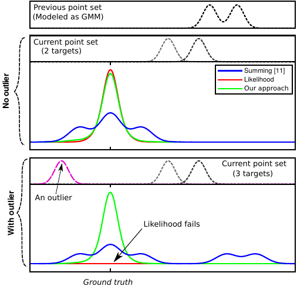

Karim HaggagPhd student, TU Chemnitz+49 174 5423522
khagag14@gmail.com
karim.haggag@etit.tu-chemnitz.de
|
|
- I am a research assistant and a Ph.D. student at the chair of automation technology at TU Chemnitz. My main focus is radar perception, where I came out with a credible ego-motion estimation algorithm for sparse point cloud and got close to different existing algorithms in the same vein. Integrating radar within a sensor fusion framework is my current interest to achieve object tracking or more demanding application such as object classification.
|

|
A Credible and Robust approach to Ego-Motion Estimation using an Automotive Radar.Consistent motion estimation is fundamental for all mobile autonomous systems. While this sounds like an easy task, often, it is not the case because of changing environmental conditions affecting odometry obtained from vision, Lidar, or the wheels themselves. Unsusceptible to challenging lighting and weather conditions, radar sensors are an obvious alternative. Usually, automotive radars return a sparse point cloud, representing the surroundings. Utilizing this information to motion estimation is challenging due to unstable and phantom measurements, which result in a high rate of outliers. We introduce a credible and robust probabilistic approach to estimate the ego-motion based on these challenging radar measurements; intended to be used within a loosely-coupled sensor fusion framework. Compared to existing solutions, evaluated on the popular nuScenes dataset and others, we show that our proposed algorithm is more credible while not depending on explicit correspondence calculation. |